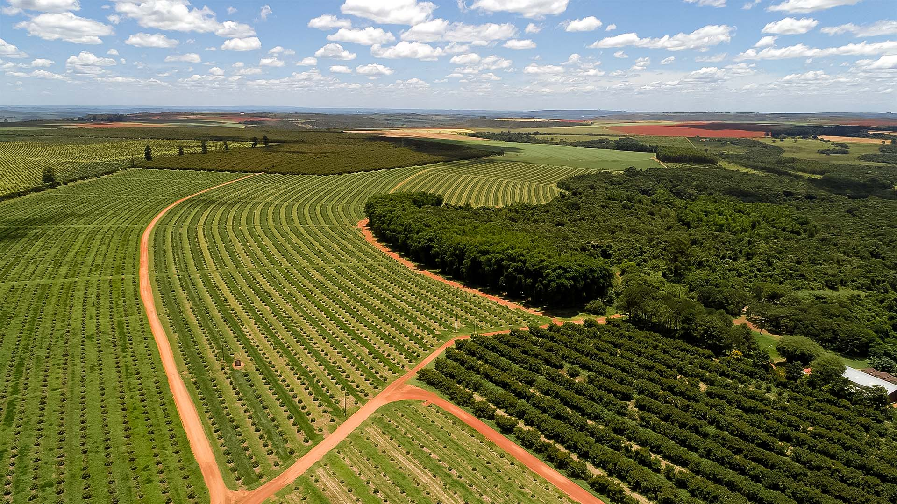

fonte

Garantir, desenvolver, articular e incentivar a criação e implementação de políticas publicas
para. Fomentar, inclusive com incentivos fiscais, a instalação de indústrias recicladoras, criando
polos estaduais e territoriais de reciclagem com a contribuição de cooperativas e associação dos catadores.
Estabelecer programas de incentivo fiscal e financiamento para desenvolvimento e apoio às
empresas que realizem a reciclagem, aproveitamento, tratamento e destinação de resíduos, estabelecendo
instrumentos tributários diferenciados que beneficiam o protetor-recebedor e onerem o poluidor-pagador e
desonere a cadeia produtiva de reciclagem. Criação, instalação, ampliação, fomento e fiscalização de pontos (públicos) de coleta
seletiva, ecopontos ligados em redes e com compostagem, lixeiras ecológicas, centros de triagem em nível
local, postos de entrega voluntária - PEV, e destinação de resíduos, bem como calendário de coleta regular,
acompanhado de um programa de conscientização junto à população, nos bairros, municípios, nas escolas
e universidades, em pontos estratégicos, em povoados, na zona urbana e rural, de forma a abranger a
coleta de resíduos como: resíduos recicláveis, resíduos domiciliares recicláveis, óleo residual doméstico,
compactação de veículos inservíveis, pneus, entulhos de obras e bens inservíveis, resíduos especiais,
eletroeletrônicos, prevendo receitas oriundas do sistema de logística reversa, sob responsabilidade de
prefeituras, instituições e empreendedores e com foco social.